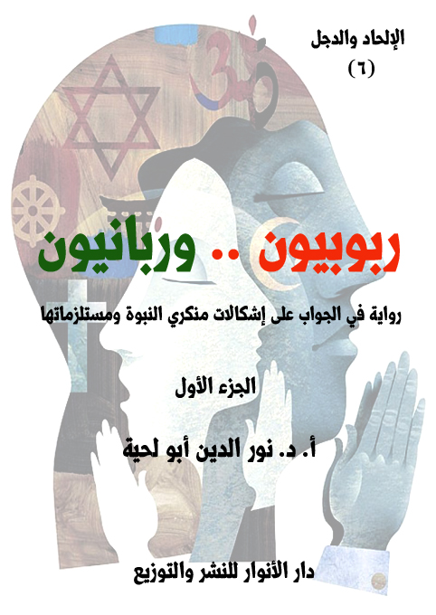

تحميل السلسلة بصيغة مصورة : PDF
تحميل السلسلة بصيغة نصية: DOCX
تحميل جميع كتب المؤلف بصيغة مصورة : PDF
تحميل جميع كتب المؤلف بصيغة نصية: DOCX
سلسلة [الإلحاد والدجل]
تحاول هذه السلسلة مواجهة الموجة الإلحادية الجديدة التي تكتسح مجتمعاتنا الإسلامية خصوصا، والمجتمعات الإنسانية عموما، لتحقق مشروع الشيطان الأكبر: صرف الإنسان عن الله، وصرفه بعد ذلك عن كل القيم الإنسانية والدينية الرفيعة، والانحدار به في هاوية [أسفل سافلين]، حيث يفقد الإنسان إنسانيته، ويفقد معها قيمه وكرامته، وينضم بعدها إلى معسكر الشياطين.
وبما أن هذا النوع من الإلحاد لا يكتفي باللغة الفلسفية أو العلمية، وإنما يستعمل كل الوسائل والأساليب ليصل لعوام الناس وخواصهم، فهو يستعمل اللغة الأدبية في رواياته وقصصه القصيرة والطويلة، ليصل إلى الجماهير العريضة من الناس، كما يستعمل الكتابة العلمية والأكاديمية ليصل إلى نخبة المثقفين، فإنه يلزم على من يريد أن يواجه هذه المنظومة الشاملة لأخطر أنواع الأسلحة أن يستعمل نفس أساليبها ووسائلها حتى يصل إلى عوام الناس ونخبتهم.
ولذلك استعملت هذه السلسلة كلا الأسلوبين: الأسلوب العلمي الذي يصف الواقع بدقة، ويرد عليه، والأسلوب الأدبي الذي يصف الواقع ببعض الرمزية ليقرب الصورة، ويحولها إلى واقع مشاهد بدل أن يكون واقعا مسموعا أو موصوفا.
ومن الكتب المتوفرة حاليا من هذه السلسلة:
1. ما قاله الملاحدة.. ولم يسجله التاريخ
2. الهاربون من جحيم الإلحاد
3 ـ الكون بين التوحيد والإلحاد
4 ـ الحياة.. تصميم لا صدفة
5 ـ كيف تناظر ملحدا؟
ما قاله الملاحدة.. ولم يسجله التاريخ
التعريف بالكتاب
هذه الرواية الحوارية محاولة لاستنطاق أصوات الفطرة التي لم يستطع كبار ملاحدة التاريخ أن ينطقوا بها، أو يسجلوها في كتبهم، أو يسجلها التاريخ عنهم.. بينما كل شيء يدل عليها، فالإنسان مهما انحرف عن فطرته، فسيبقى فيه ما يصرخ بالحقيقة التي يغض طرفه عنها.
وقد استلهمنا هذه الأحاديث من تلك الصرخة التي صرخها فرعون الطاغية المستبد الذي كان يجاهر كل حين بمعارضته لربه، وتكذيبه به.. لكنه في اللحظة التي تنكشف فيها الحقائق راح يصرخ بالاعتراف بالله، والإذعان له.. وهذا يدل على أنه كان في قرارة نفسه يعترف بالله، ولكن كبرياءه حال بينه وبين الإذعان له، كما قال تعالى: {وَجَحَدُوا بِهَا وَاسْتَيْقَنَتْهَا أَنْفُسُهُمْ ظُلْمًا وَعُلُوًّا} [النمل: 14]
وهكذا يحكي لنا القرآن الكريم قصص أولئك المشركين الذين يقرون بالله، ويخلصون له، ويتخلصون من كل الأوثان التي تحول بينهم وبينه في ساعات الشدة والضيق، قال تعالى: {فَإِذَا رَكِبُوا فِي الْفُلْكِ دَعَوُا اللَّهَ مُخْلِصِينَ لَهُ الدِّينَ فَلَمَّا نَجَّاهُمْ إِلَى الْبَرِّ إِذَا هُمْ يُشْرِكُونَ} [العنكبوت: 65]
الهاربون من جحيم الإلحاد
التعريف بالكتاب
يتناول هذا الكتاب المناهج الكبرى التي استعملها العلماء والفلاسفة والمتكلمون من المدارس المختلفة للدلالة على وجود الله، مع ضرب الأمثلة عن البراهين المرتبطة بها، وتقريراتها المختلفة، محاولا تبسيط كل ذلك، باستعمال الحوار والقصة والمثال وغيرها من أساليب التبسيط.
ذلك أن الكثير من تلك المناهج ـ وخاصة الفلسفية أو الكلامية منها ـ تعرض بطريقة يصعب على العامة والبسطاء التعرف عليها والاستفادة منها مع أهميتها البالغة، ولذلك تبقى محصورة في دوائر ضيقة، مع أنها من الأسلحة المهمة والنافعة التي يواجه بها الإلحاد، وخاصة الإلحاد الجديد الذي يعتمد عرض الأطروحات الإلحادية القديمة بطريقة بسيطة، ويجد من يسمع له، وفي نفس الوقت لا يجد في الطرف المقابل إلا طروحات غاية في التعقيد والغموض، والتي قد تثير فيه من الإشكالات أكثر مما تحل له من العقد.
الكون بين التوحيد والإلحاد
التعريف بالكتاب
يناقش هذا الكتاب بطريقة علمية هادئة ما يستند إليه الملاحدة من منتجات العلوم الحديثة، سواء علم الفلك أو الفيزياء بنوعيها الكلاسيكي والحديث..وذلك عبر منهجين:
أولا ـ منهج نفي الاستدلال بها، وكونها من الناحية المنطقية عديمة الدلالة على الإلحاد، وإنما يتلاعب الملاحدة بالألفاظ ليجعلوها سندا لهم.
ثانيا ـ منهج بيان عدم تحققها بالعلمية الكافية، ذلك أن الكثير من النظريات التي نجدها على المواقع كسند يعتمد عليه الملاحدة ليس لها أي حظ علمي عند المتخصصين، فهي لم تجرب، بل يستحيل تجريب أكثرها، وهي عبارة عن ميتافيزياء، وليست فيزياء، ولذلك لا يصح اعتبارها سندا علميا.
بالإضافة إلى هذا، فقد رددنا في هذا الجزء بطريقة غير مباشرة على تلك الدعاوى التي تربط العلم وخصوصا الفيزياء والفلك بالإلحاد.. لهذا جعلنا لأبطال الرواية جميعا علاقة بشخصيات علمية واقعية، صرحت بإيمانها بالله، ليكتسب القارئ من خلالها حصانة وقدرة على محاجة الملحدين في مثل هذه الطروحات..
الحياة.. تصميم لا صدفة
التعريف بالكتاب
يحاول هذا الكتاب أن يناقش أكثر الأطروحات المادية والإلحادية شهرة وانتشارا، والتي استعملت كل الوسائل، ومارست كل الخدع لتفسير نشأة الحياة وتنوعها تفسيرا ماديا يبعدها عن الحاجة إلى الله، وإلى تصميمه المبدع، وعنايته الرحيمة.
وبما أن النظرية التي تولت ذلك هي نظرية التطور، بمراحلها المختلفة، فإن هذا الكتاب هو مناقشة علمية هادئة لكل أطروحات تلك النظرية، وردود علمية عليها، وإجابات عن كل الشبهات التي تطرحها، ابتداء من نشأة الحياة، وانتهاء بتنوعها إلى الصورة التي نراها عليها.
وقد اعتمدنا في هذه الردود على ما ذكره العلم الحديث من حقائق لم تكن موجودة زمن داروين والعلماء الذين وقفوا في صفه.. فالعلم اليوم يسير بخطا سريعة نحو تحطيم هذه النظرية والأسس التي تقوم عليها.. بل ظهرت مؤسسات وجمعيات كثيرة من الغرب نفسه تبين أن هذه النظرية لم يبق لها ما يسندها، ويدل عليها، لا من الحفريات، ولا من غيرها.. ولذلك رموها بالخرافة والدجل.. وكونها تحولت إلى أداة أيديولوجية، لا نظرية علمية.
ربوبيون وربانيون
الكتاب: ربوبيون.. وربانيون
الوصف: رواية في الجواب على إشكالات منكري النبوة ومستلزماتها
السلسلة: الإلحاد والدجل
المؤلف: أ. د. نور الدين أبو لحية
الناشر: دار الأنوار للنشر والتوزيع
الطبعة: الأولى، 1444 هـ
عدد الصفحات: 1026
الجزء الأول: PDF
الجزء الأول: DOCX
الجزء الثاني: PDF
الجزء الثاني: DOCX
الجزء الثالث: PDF
الجزء الثالث: DOCX
لمطالعة الجزء الأول: هنا
لمطالعة الجزء الثاني: هنا
لمطالعة الجزء الثالث: هنا
لمطالعة الكتاب من تطبيق مؤلفاتي المجاني وهو أحسن وأيسر: هنا

يحاول هذا الكتاب ـ بأجزائه الثلاثة ـ أن يجيب على كل الإشكالات التي يطرحها من يطلقون على أنفسهم لقب [الربوبيين]، وهم الذين يرون إمكانية استبدال النبوة بالعقل، ويرون أن هداية الله لهم يمكن أن تتحقق من دون حاجة لأي دين أو نبوة، وقد استثمروا في ذلك ما وقع في تاريخ الأديان من انحرافات عما تقتضيه العقول السليمة، وتتطلبه القيم النبيلة.
ولذلك فإنه ـ وبصيغته الروائية الحوارية ـ يحاول ـ وبهدوء ـ أن يحاور هؤلاء، من خلال منطلقاتهم العقلية والفكرية أولا، ثم من خلال مستلزمات تلك المنطلقات، وهي الأدلة التفصيلية التي يسوقونها لبيان الانحرافات التي وقعت فيها الأديان.
وهذا السبب هو الذي دعانا إلى مناقشة كل الانحرافات التي وقعت فيها الأديان، وبمختلف أنواعها، وبيان الاتفاق عليها مع الربوبيين، ثم بيان وجه الحق في التعامل معها.
ولهذا يجد القارئ الرواية مملوءة بذكر الكثير من مواقف الأديان والمذاهب الفكرية في كل قضية تُطرح ابتداء من القضايا المرتبطة بالله والنبوة والكتب المقدسة، وانتهاء بكل القيم الإنسانية كالسلام والعدالة والرحمة وغيرها.
وبما أن مشكلة الربوبيين هي في ذلك التعميم الخاطئ لمواقفهم، فقد بينا في الرواية خطأ ذلك التعميم، وأن كل المعاني السليمة التي يسوقونها أو يدعون إليها موجودة في الإسلام، باعتباره الدين المهيمن والصحيح الباقي على وجه الأرض، مع التنبيه إلى الأخطاء التي وقع فيها المسلمون، والتي لا علاقة لها بالدين الإلهي.
|